百家樂
簡介:
長期以來，百家樂是亞洲、歐洲和拉丁美洲最受歡迎的游戲之一，玩法簡單，卻刺激緊張!
如何勝出:
百家樂中將發兩份牌"莊家" 和"閑家"，總數得9點或最接近9 點的一家勝出。
操作及下注指南:
1. 點擊下注的籌碼，再點擊桌上下注任何一塊( 閑家、莊家或平局)。
2. 閑家和莊家將獲發兩張牌，加起來等於10作0點，總和超過9，則只算總數中的個位。
3. 任何一家拿到9點（天生贏家），牌局就算結束，不再補牌。
4. 派出兩張牌後，如果任何一手牌的頭兩張牌的牌面為0至7，將依照補牌規則多發一張牌，不可以任選補牌。
5. 沒有任何一手牌獲得超過三張牌。
游戲玩法
本游戲采用8副牌（每副牌52張）來進行，游戲牌數合計416張。
“閑家”“莊家”各先派兩張牌，以“閑家”先發，如第一輪未分出勝負需再按“牌例”發第二輪的牌，最多每方3張牌，誰最接近9點即為勝方，而相同點數即和局
游戲規則:
1. 點數計算
| 牌面 | 點數 |
|---|---|
| 2 至 9 | 根據其數值顯示的點數 |
| Ace | 1 |
| K或Q或J或10 | 0 |
*當任何一家頭兩張牌的點數總和為8或9，就稱為(天生贏家)。
*派出兩張牌後，如果需要補牌，將依照博牌規則向需要補牌方多發一張牌
例子:
4 + 2 + 6 = 2
5 + 6 + 8 = 9
10 + 10 + 10 = 0
2. 補牌規則:
閒家∶
| 閒兩牌合計點數 | (閒家) |
|---|---|
| 0 | 必須博牌 |
| 1 | 必須博牌 |
| 2 | 必須博牌 |
| 3 | 必須博牌 |
| 4 | 必須博牌 |
| 5 | 必須博牌 |
| 6 | 不得博牌 |
| 7 | 不得博牌 |
| 8 | 例牌，即定勝負 |
| 9 | 例牌，即定勝負 |
莊家∶
| 莊兩牌合計點數 | (莊家) |
|---|---|
| 0 | 必須博牌 |
| 1 | 必須博牌 |
| 2 | 必須博牌 |
| 3 | 若閒家博得第三張牌是8點，莊家不得博牌 |
| 4 | 若閒家博得第三張牌是0，1，8，9點， 莊家不得博牌 |
| 5 | 若闲家博得第三张牌是0，1，2，3，8，9点， 庄家不得博牌 |
| 6 | 若閒家博得第三張牌是6 或7點，莊家必須博牌 |
| 7 | 不得博牌 |
| 8 | 例牌，即定勝負 |
| 9 | 例牌，即定勝負 |
*莊閑任何一方兩牌合計8、9點為例牌，對方不須博牌，即定勝負。莊閑兩方頭兩張牌各得6或7點，即和局。
派彩賠率:
本游戲為玩家提供百家樂玩法和免佣百家樂玩法。這兩種玩法的博牌規則和投注種類一致，但投注莊的派彩方式有區別。其投注種類與派彩分別如下：
百家樂:
| 投注項目 | 賠率 |
|---|---|
| 閑家 | 1 ：1 (開和局時退回下注金額) |
| 莊家 | 1 ：0.95 (開和局時退回下注金額) |
| 和局 | 1 ：8 |
| 閑對子 | 1 ：11 |
| 莊對子 | 1 ：11 |
| 大 | 1 ：0.5 |
| 小 | 1 ：1.5 |
免佣百家樂:
| 投注項目 | 賠率 |
|---|---|
| 閑家 | 1 ：1 (開和局時退回下注金額) |
| 莊家 | 1 ：1 (如莊以6點取勝，則賠一半；開和局時退回下注金額) |
| 和局 | 1 ：8 |
| 閑對子 | 1 ：11 |
| 莊對子 | 1 ：11 |
| 大 | 1 ：0.5 |
| 小 | 1 ：1.5 |
大小、莊/閑對子
1. 大小：指根據當局所開之牌張數的總和為依據，4張牌為小，5張牌或6張牌為大。游戲中，若莊家及閑家各只發兩張牌，合共4張牌，即押注「小」者為勝。相反，若莊、閑任一方有博牌，令總牌數為5或6張，即押注「大」者為勝。
2. 莊/閑對子 ：指根據當局所開之牌的莊/閑前兩張牌的牌面（數字或字母，不計花式）為依據，牌面相同為對子。游戲中，莊家前兩張牌的牌面相同，為莊對子，即押注「莊對」者為勝。閑家前兩張牌牌面相同，為閑對子，即押注「閑對」者為勝。
請注意
•
當每一靴牌進入第31局或以後，玩家將不得投注大小。
•
桌台限紅是本游戲桌台主要玩法的最小、最大玩法限紅。玩家在每個玩法的可押注限額是玩法限紅與玩家個人限紅的交集。如需調節個人限紅，請聯系網站客服。
•
荷官發牌時，偶有系統無法判讀狀況時，此時荷官將重新掃描，直到系統能夠完整判讀(如遇故障因素將注銷所有相關注單/派彩)。
•
如遇結算錯誤，按照當期視頻結果重新結算。
牌路介紹
「路」的意思，是百家樂開牌的結果記錄。
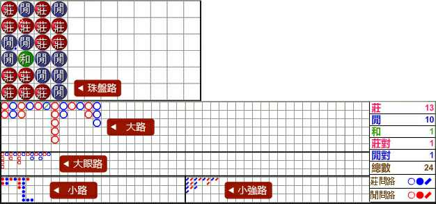
一、開牌結果的紀錄
紅色珠為莊，藍色珠為閒, 綠色珠為和，紅點在珠的左上角代表莊對，藍點在珠的右下角代表閒對，如果同時出現莊對和閒對，則左珠的上角和右下角標示紅點和藍點。
二、大路
紅圈為莊，藍圈為閒, 莊一列, 閒一列, 序排列出, 如果和的話, 會用一條綠色斜線代表，如果之後連續出現和，便用綠色數字代替。
三、大眼路
大眼路是根據大路延伸出來，從大路的第2列第2行開始分析出來，若那位置沒有結果，則以大路的第3列第1行開始分析
如下圖:
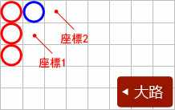
先從座標1(第2列第2行)分析，若座標1無莊或閒，則以座標2(第3列第1行)開始分析。
●大眼路畫藍圈規則:
1.向下
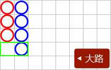
以大路最新的結果，水平方式跟前一列作對比，如無結果，則於大眼路畫藍圈。
2.換列
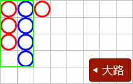
以大路最新的結果，如比對前一列與前二列結果位置是不齊整，則於大眼路畫藍圈。
●大眼路寫法畫紅圈規則:
1.向下
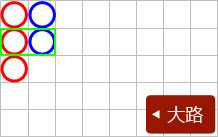
以大路最新的結果，水平方式跟前一列作對比，不論結果為莊或閒，則於大眼路畫紅圈。
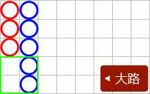
以大路最新的結果，水平方式跟前一列作對比，如前一列的前二行或以上都無結果，則於大眼路畫紅圈。
2.換列
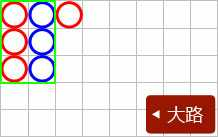
以大路最新的結果，如比對前一列與前二列結果位置是齊整，則於大眼路畫紅圈。
四、小路
小路是根據大路延伸出來，從大路的第3列第2行開始分析出來，若那位置沒有結果，則以大路的第4列第1行開始分析
如下圖:
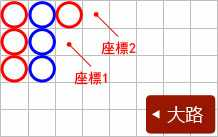
先從座標1(第3列第2行)分析，若座標1無莊或閒，則以座標2(第4列第1行)開始分析。
●小路寫法畫藍圈規則:
1.向下
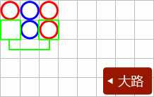
以大路最新的結果，水平方式跟前二列作對比，如無結果，則於小路畫藍點。
2.換列
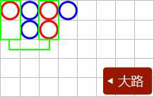
以大路最新的結果，如比對前一列與前三列結果位置是不齊整，則於小路畫藍點。
●小路寫法畫紅圈規則:
1.向下
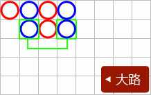
以大路最新的結果，水平方式跟前二列作對比，不論結果為莊或閒，則於小路畫紅點。
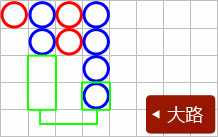
以大路最新的結果，水平方式跟前二列作對比，如前二列的前二行或以上都無結果，則於小路畫紅點。
2.換列
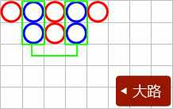
以大路最新的結果，如比對前一列與前三列結果位置是齊整，則於小路畫紅點。
五、小強路
小路是根據大路延伸出來，從大路的第4列第2行開始分析出來，若那位置沒有結果，則以大路的第5列第1行開始分析
如下圖:
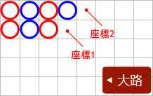
先從座標1(第4列第2行)分析，若座標1無莊或閒，則以座標2(第5列第1行)開始分析。
●小強路畫藍色斜線規則:
1.向下
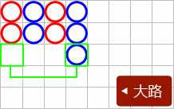
以大路最新的結果，水平方式跟前三列作對比，如無結果，則於小強路畫藍色斜線
2.換列
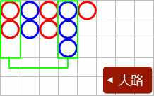
以大路最新的結果，如比對前一列與前四列結果位置是不齊整，則於小強路藍色斜線。
●小強路畫紅色斜線規則:
1.向下
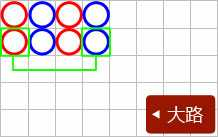
以大路最新的結果，水平方式跟前三列作對比，不論結果為莊或閒，則於小強路畫紅色斜線。
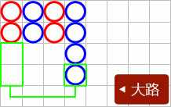
以大路最新的結果，水平方式跟前三列作對比，如前三列的前二行或以上都無結果，則於小強路畫紅色斜線。
2.換列

以大路最新的結果，如比對前一列與前四列結果位置是齊整，則於小強路畫紅色斜線。
六、莊問路、閒問路
此功能是模擬下一局如果開莊或閒時，大路、大眼路、小路、小強路的結果。令玩家更方便及快速地判斷該如何投注下一局。
如下圖:
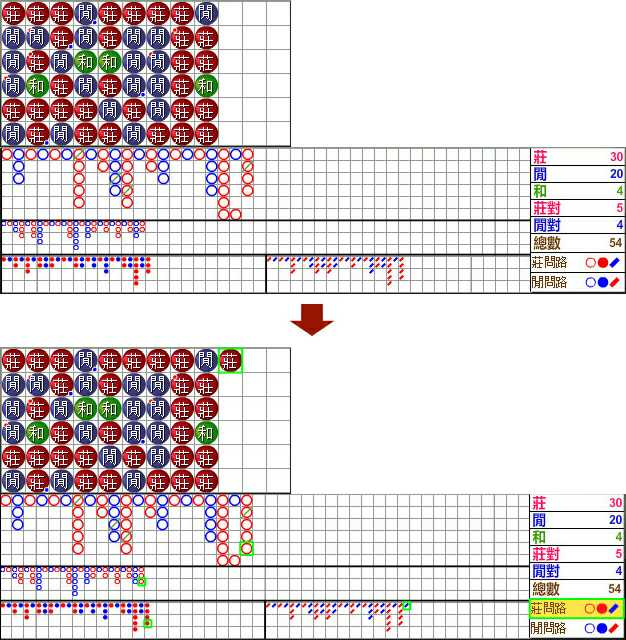
模擬下一局開莊或閒的路